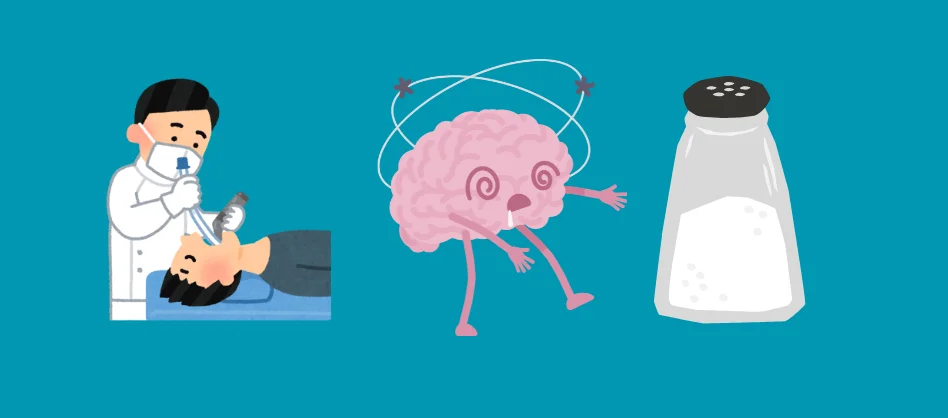

A first-in-class drug for narcolepsy, and what it took to get here
As a scientist and someone who was diagnosed with narcolepsy, it’s pretty exciting to see that a few days ago the FDA approved oveporexton (Orzeful). Oveporexton is a first in class drug that acts as an agonist, mimicking the action of orexins (hypocretins), to treat narcolepsy type 1.
Narcolepsy is characterized by excess daytime sleepiness and REM sleep during naps. Type 1 used to be referred to as narcolepsy with cataplexy, which is muscle weakness triggered by strong emotions.
Two research groups first connected orexins with narcolepsy in 1998, and the first treatment (Xyrem) to address cataplexy for patients with narcolepsy was approved by the FDA in October of 2002. Oveporexton is the first FDA approved drug to target orexin.
This new class of drugs, orexin-receptor agonists, have already been referred to as the “GLP-1 of neuroscience.” I am thrilled there is a treatment for narcolepsy type 1 that targets the underlying physiology, and hopeful at the potential to treat additional complex chronic disorders.
Although I was originally diagnosed with narcolepsy, it was later corrected to idiopathic hypersomnia (IH). IH is very similar to narcolepsy, but IH tends to involve sleeping longer without feeling rested and sleep attacks, but no REM during naps. The first FDA approved drug for IH was Xywav in 2021.
Xyrem and Xywav are very similar compounds, in fact Xywav was developed to reduce the sodium content in Xyrem. Both medications are made of gamma-hydroxybutyrate (GHB), which was reported in 1960 to work for anesthesia. The active ingredient didn't change, yet only Xywav made a difference in my symptoms.
In other words, a medication that puts people to sleep helps overly sleepy people, and some of them require less salt.
Science is rarely a straight line from discovery to clinical treatment, it is built by ideas, collaborations, experiments, revisions, and corrections.
Breakthroughs like this remind me of how powerful research can be and how important it is to build a system that ensures cost and access aren’t the barrier to these discoveries.